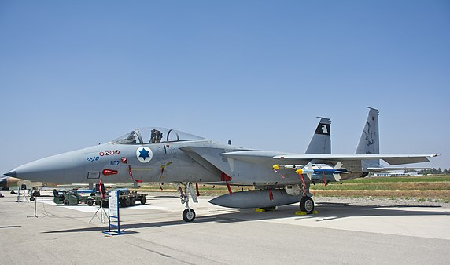
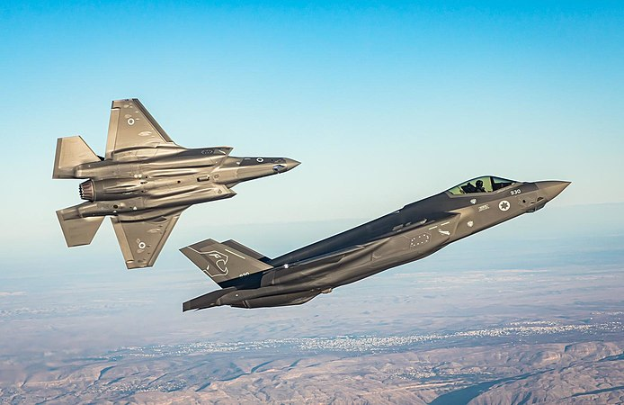
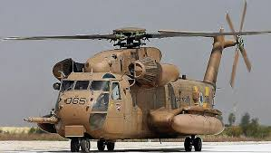
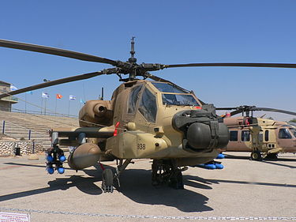

מטוסי קרב
f15i

F-15 איגל (Eagle; מאנגלית: "עיט") הוא מטוס קרב מהדור הרביעי דו-מנועי להשגת עליונות אווירית מתוצרת ארצות הברית. המטוס פותח ויוצר תחילה בידי חברת מקדונל דאגלס, ובהמשך בידי חברת בואינג. אב טיפוס של המטוס מדגם YF-15 טס לראשונה ב-27 ביולי 1972. נגזרת של המטוס, F-15E סטרייק איגל (Strike Eagle; מאנגלית: "העיט התוקף"), הוא מטוס קרב רב-משימתי לתקיפת קרקע ולאמנעה אווירית שנכנס לשירות ב-1988.
40 הפלות מטוסי ה"בז" בשירות חיל-האוויר הישראלי הפילו 40 מטוסים, כולם של חיל-האוויר הסורי. ב-27 ביוני 1979 הפיל תא"ל (מיל') משה מטוס מיג-21 סורי בשמי לבנון. היתה זו הפלת הבכורה העולמית של המטוס. ב-13 בפברואר 1981 הפיל F-15 של חיל-האוויר בטיל אוויר-אוויר מיג-25 סורי. היתה זו ההפלה הראשונה בעולם של מיג-25.
25 מטוסים נוספים בחודש אוקטובר 1993 קיבל חיל-האוויר הישראלי 25 מטוסי F-15 מעודפי חיל-האוויר האמריקאי. חמשת המטוסים הראשונים הגיעו מארה"ב לאחר נחיתת-ביניים בת יום באירופה, והגיעו אל בבסיס חיל-האוויר במרכז הארץ.
הפנים אל שנות ה-2000 בשנת 1995 החלה בישראל תוכנית "בז-2000" במטרה להתאים את מטוסי ה-F-15 טיסה בשדה-הקרב של שנות ה-2000, תוכנית ההשבחה כוללת שינויים מקיפים במערכות האוויוניקה של המטוס בעלות כוללת של כ-90 מיליון דולר, בהם שיפור בתצוגות תא-הטייס המתקבלות מהמכ"ם ומחיישנים נוספים שבמטוס. את מחשב החימוש הישן במטוס החליף מחשב החימוש שנמצא בגרסת מטוסי ה-F-15 המתקדמים ("רעם") והמטוסים צווידו באוויוניקה ברמה דומה לאוויוניקה של מטוסי ה-F-16. המטוסים המשודרגים זכו לשם בז משופר (בזמ"ש). מטוסי ה"בז" המשופרים לקחו חלק פעיל במלחמת לבנון השניה אשר פרצה ב-2006, במבצע "עופרת יצוקה" בשנת 2008 ובמבצע "עמוד ענן" בשנת 2012.
vgvgvvg
f16i

חיל-האוויר החל לגלות עניין ב F-16 כבר בשלבי פיתוחו. יתרונותיו של המטוס החדש קסמו למפקדים בחיל, ששאפו לראות בו את מטוס הקרב העתידי של החיל. המגעים הראשונים לרכישת המטוס החלו בספטמבר 1975. בעקבות פגישה שנערכה בפנטגון בין שר הביטחון דאז, שמעון פרס, לבין שר ההגנה האמריקאי, ג'יימס שלזינגר, הביעה ארה"ב הסכמה עקרונית לאספקת מאה מטוסים. ישראל לא הסתפקה בקבלת מטוסי F-16 מוכנים, וביקשה רשיון לייצר מרכיבים חשובים של המטוס בארץ, או אפילו להרכיב אותו בשלמותו בישראל. בקשה זו נתקלה בהתנגדות חריפה. מפקד חיל-האוויר דאז, אלוף בני פלד, ביקר בארה"ב באוגוסט 1976, וקיבל תדרוך מפורט על ה- F-16 מפי קבוצת קצינים בכירים בחיל-האוויר האמריקאי. לבסוף, הוגשה בקשה לרכישת המטוסים (בלי קשר לקבלת רשיון הייצור) וארה"ב הסכימה למכור לישראל 250 מטוסים. ב-1977 קוצצה הכמות ל-150, בשל סירובה של ארה"ב להקמת קו לייצור המטוסים בישראל. בסופו של דבר נמסרו לחיל-האוויר 75 מטוסים.
מטוסים הראשונים נוחתים בישראל ארבעה מטוסי F-16 ראשונים (שניים חד מושביים ושניים דו מושביים), נחתו בישראל ב-2 ביולי 1980, והתקבלו בטקס חגיגי בבסיס חיל-האוויר בצפון הארץ. המטוסים, שלוו על-ידי מטוס פאנטום, הוטסו לארץ על-ידי טייסים אמריקאיים בטיסה שנמשכה כ-11 שעות, וכללה מספר תדלוקים אוויריים. המטוסים קיבלו את השם העברי "נץ".
באפריל 1981 חגג מטוס F-16 את הפלת הבכורה העולמית, כשמטוסו של רס"ן רז הפיל מסוק מי-8 סורי. מאוחר יותר באותו יום הפיל מטוס F-16 אחר מסוק מי-8 נוסף. ב-14 ביולי אותה שנה הופל לראשונה מטוס קרב: אמיר נחומי, מפקד טייסת F-16, הפיל בקרב אוויר מיג-21 סורי. כשנה לאחר הגעת המטוסים הראשונים, ב-7 ביוני 1981, תקפה שמיניית מטוסי F-16, מלווה בשישיית מטוסי F-15, את הכור הגרעיני העיראקי "אוסירק" זמן קצר לפני הפעלתו. המבצע, שזכה לשם מבצע "אופרה", הסיר באופן זמני איום הגרעין העיראקי.
מבצע "ענבי זעם" פעלו כוחות צה"ל ומטוסי חיל-האוויר נגד המחבלים בדרום לבנון, במטרה להפסיק את ירי הקטיושות לעבר יישובי הצפון. במהלך המבצע, תקפו מטוסי טייסת ה-F-16 החדשה של חיל-האוויר את תחנת הכוח של ביירות. המשימה היתה לפגוע רק בממתגים מסויימים בתחנה, שיגרמו להאפלה בחלקים מהעיר ביירות, בתגובה על ירי קטיושות שגרמו להפסקת חשמל בקריית שמונה יום קודם לכן. הייתה זו הפעם הראשונה שמטוסי חיל-האוויר פעלו בביירות מאז מלחמת לבנון הראשונה. לאחר מכן, מטוסי ה-F-16 לקחו חלק פעיל במלחמת לבנון השניה אשר פרצה ב-2006, במבצע "עופרת יצוקה" בשנת 2008 ובמבצע "עמוד ענן" בשנת 2012.
vgvgvvg
f35i

מטוס ה"אדיר" (F-35I) המיוצר על-ידי חברת "לוקהיד מרטין" הינו מטוס קרב מהדור החמישי של מטוסי הקרב. הוא בעל יכולות היתוך מידע גבוהות וניהול משימה מתקדמות. כמו כן, מדובר במטוס דל-חתימה המסוגל לחמוק מגילוי מכ"ם (מגלה-כיוון-מרחק) האויב, זאת בזכות צורתו ובזכות החומר המצפה אותו. במטוס ה-F-35 פועלת מערכת "אליס" (ALIS) השולטת בכל הליך המשימה וכוללת את תכנית המשימה, את מערכות הקשר ואת מערכות ניהול התקלות במטוס. מטוס ה"אדיר" הוא תוצר של תכנית פיתוח בה שותפות מספר מדינות (ארה"ב, בריטניה, איטליה, הולנד, אוסטרליה, קנדה, דנמרק, נורווגיה וטורקיה), אשר הקימו יחד מנהלת עולמית (JPO Joint Program Office). מדינות אשר נכנסו מהשלב הראשונית לתכנית, היו שותפות פעילות בתכנית פיתוח ובניית המטוס והשקיעו בכך סכומים גבוהים. מדינות שהצטרפו לתכנית תוך כדי בניית המטוס השקיעו גם הן סכומים גבוהים והן שותפות לייצור המטוס בצורה כזאת או אחרת. יחד עם פיתוח המטוס, הוחלט כי ה-F-35 יעבוד בשיטת התחזוקה הגלובלית, במסגרתה יוקמו מרכזי תחזוקה עולמיים אליהם יישלחו מטוסים תקולים וחלקי מטוס הדורשים תיקון. אף על פי כן, הוחלט בחיל-האוויר שמטוס לא יעזוב את המדינה לצורך תחזוקה אלא רק למשימות מבצעיות חוצות קו. זוג מטוסי ה"אדיר" הראשונים הוצבו בבסיס נבטים שבנגב, בטייסת "נשר הזהב" - טייסת "האדיר" הראשונה.
vgvgvvg
מערך ההגנה האווירית
כיפת ברזל

כיפת ברזל היא מערכת הגנה אווירית אקטיבית ניידת ליירוט רקטות קצרות-טווח, פצצות מרגמה וכלי טיס בלתי מאוישים שפותחה ומיוצרת בישראל, בעזרת סיוע כלכלי של ארצות הברית[3]. המערכת פותחה ומיוצרת על ידי חברת "רפאל - מערכות לחימה מתקדמות". חברת "אלתא" מייצרת את המכ"ם, וחברת "mPrest" פיתחה את מערכת השליטה והבקרה.[4]
כיפת ברזל היא מערכת הגנה אווירית אקטיבית ניידת ליירוט רקטות קצרות-טווח, פצצות מרגמה וכלי טיס בלתי מאוישים שפותחה ומיוצרת בישראל, בעזרת סיוע כלכלי של ארצות הברית[3]. המערכת פותחה ומיוצרת על ידי חברת "רפאל - מערכות לחימה מתקדמות". חברת "אלתא" מייצרת את המכ"ם, וחברת "mPrest" פיתחה את מערכת השליטה והבקרה.[4]
קלע דוד

קלע דוד[2] (באנגלית: David's Sling, נקראה בעבר שרביט קסמים) היא מערכת ליירוט רקטות, טילים לטווח בינוני־ארוך ומטוסים ללא טייס, שפותחה במשותף על ידי רפאל - מערכות לחימה מתקדמות הישראלית וריית'און (Raytheon) האמריקנית. המערכת, בעלת טיל מיירט דו־שלבי, המתמרן במהירות, שבחרטומו מותקנות שתי מערכות איכון והכוונה - מכ"ם וחיישן אלקטרו־אופטי. בשנת 2006 זכתה רפאל במכרז לפיתוח מערכת הגנה כנגד רקטות לטווחים בינוניים וארוכים (40–300 ק"מ).[3] על מנת לאפשר מימון הפיתוח וההצטיידות העתידית מכספי הסיוע האמריקניים, הוקמה השותפות עם חברת ריית'און האמריקנית. בחלק מפרסומי חברת ריית'און מכונה הטיל המיירט "Stunner".
האיום הגובר של רקטות וטילים הביא לפיתוחן של מערכות הגנה אחדות מפני איום זה. בנוסף למערכת "קלע דוד" ליירוט רקטות לטווח בינוני וארוך, פותחו ונכנסו לשימוש מבצעי מערכת "כיפת ברזל", המשמשת ליירוט רקטות קצרות טווח, מערכת "חץ 2" ליירוט טילים בליסטיים, ומערכת "חץ 3" ליירוט טילים בליסטיים בעודם בחלל.
חץ 3

חץ 3 הוא טיל נגד טילים אקסו-אטמוספירי - מיועד ליירט טילים בליסטיים בחלל והרחק מגבולות ישראל, כחלק ממערכת הנשק חץ. הטיל פותח במפעל מלמ של התעשייה האווירית לישראל. היכולת ליירט מחוץ לאטמוספירה מקטינה את הסכנה שראש הקרב, חומרי לחימה כימיים או ביולוגיים או שרידי הטיל, יתפזרו מעל שטח ישראל. מערכת 'חץ 3' היא הנדבך העליון במערך ההגנה הרב-שכבתית של ישראל כך שבהינתן תרחיש של כישלון יירוט על ידה יתאפשרו ניסיונות יירוט נוספים על ידי הנדבכים התחתונים[1] של המערכת. על פי הערכת יושב ראש סוכנות החלל הישראלית, יצחק בן ישראל, חץ 3 מסוגל ליירט גם לוויינים, יכולת השמורה לקומץ מדינות בעולם.[2] בניסוי שנערך ב-2019 הוכח כי המערכת מסוגלת ליירט בחלל החיצון טילים בליסטיים בעלי ראש קרב גרעיני מתפצל - טרם ראש הקרב התפצל.[3]
ck53 יסעור
סוקי היסעור הראשונים סופקו לחיל האוויר הישראלי במהלך מלחמת ההתשה, והופעלו במבצעים שונים במהלכה. חודשיים בלבד לאחר הגעת המסוקים לישראל, ב-26 בדצמבר 1969, יצאו המסוקים לפעילות המבצעית הראשונה, מבצע תרנגול 53. במהלך המבצע הוטסו חיילי גדוד 50 של הצנחנים (נח״ל מוצנח) לעומק מצרים והשתלטו על מתקן מכ"ם. מסוקי היסעור נשאו את קרונות המכ"ם לשטח ישראל, אף על פי שהיו במשקל העולה על מגבלות המטען המרבי של היסעור. במהלך מלחמת יום הכיפורים במסגרת מבצע קינוח לכיבוש החרמון ב-22 באוקטובר 1973, הונחתו באמצעות 15 יסעורים מטייסת 118 (כמעט כל הטייסת) 2 גדודי צנחני מילואים מחטיבה 317 (כיום חטיבה 226), שכללו 625 לוחמים. הכוח הונחת בקרבת המוצב הסורי שעל החרמון וכבש אותו ללא קרב. אף שהמסוק משמש להובלת חיילים, הוסבה בסוף 2001 מערכת ישראלית ראשונה מסוגה בעולם של טיל נ"ט מונחה לייזר ו-GPS "נמרוד", לצורך הגנה על המסוק מאיומים קרקעיים ואוויריים. המסוק יכול לשאת שמונה טילים כאלו, שהטווח שלהם הוא 20 ק"מ, במקום מכלי הדלק הנתיקים. לא ידוע על הכנסת המערכת לשימוש במסוקים מעבר לבדיקת ההיתכנות. מסוקי היסעור של חיל האוויר הישראלי, שעברו השבחה טכנולוגית, מכונים "יסעור 2000". עקב אי מציאת תחליף הולם למסוקי היסעור, בוצעה בחיל האוויר תוכנית השבחת מערך היסעור כך שיוכלו להמשיך לשרת עד שנת 2025. התוכנית נקראה "יסעור 2025".[11]
uh60 ינשוף
בתחילת שנת 1999 החל חיל-האוויר הישראלי תוכנית השבחה, אשר במסגרתה צוידו חלק מהמסוקים החדשים בצינור לתדלוק אווירי ובמכלי דלק נתיקים עיליים, המאפשרים גישה נוחה לתא המטען ושימוש במקלעים. השבחת המסוק הראשון מדגם ינשוף-2 הושלמה לקראת סוף שנת 1999 והוא ביצע את טיסת הבכורה בתחילת שנת 2000. מרכז ניסויי הטיסה של חיל-האוויר בדק את המסוק וביצע תדלוק אווירי ראשון במרץ 2000. המסוק הראשון, מספר 934, הוחזר לטייסת עד מאי 2000, אז נפרסו לראשונה מספר מסוקים לטורקיה. מסוקי ה-UH-60A עברו אף הם שדרוג שכלל התקנה של מערכות קשר חדשות, מערכות לוחמה אלקטרונית, מערכת ניווט, מערכת תצוגה לילית ומערכות חילוץ. בשנת 2000 נחתמה עסקה נוספת עם חברת "סיקורסקי", במסגרתה רכש חיל-האוויר 24 מסוקי בלאק הוק חדשים (מדגם לימה), 70 מנועי T700-GE-701C וכן 29 מנועים נוספים ארוזים לחירום. בנוסף, כללה העסקה רכישה של רכיבים נוספים, חלקי חילוף וציוד תמיכה. המסוקים החדשים זהים כמעט לחלוטין בתצורתם למסוקי הבלאק הוק המשופרים אשר נקלטו בחיל-האוויר בשנת 1998. בתחילת חודש אוגוסט 2002 הגיעו חמשת המסוקים הראשונים לישראל, וב-8 באוגוסט נפתחה באופן רשמי טייסת "ציפורי המדבר", בה נקלטו המסוקים. במהלך שנים רבות עלו דיווחים על כך שחיל האוויר הישראלי בוחן גרסה חמושה של הבלאק הוק[5], אך עד היום הרעיון לא מומש בישראל.
ah64 אפאצ"י
בתחילת העשור הראשון של המאה ה-21 הודיע חיל האוויר על כוונתו לשדרג 12 מהמסוקים שברשותו לדגם D, אך מפקד חיל האוויר באותה תקופה, האלוף (לימים רב-אלוף) דן חלוץ, החליט במקום זאת על רכישת 12 מסוקים חדשים מדגם D.[128] מאוחר יותר הוחלט גם על שדרוג כמה מהמסוקים מדגם A לדגם D, לצד רכישת מסוקים חדשים. מסוקים ראשונים מדגם D סופקו לישראל ב-10 באפריל 2005.[130][131] שמם בחיל האוויר הישראלי שרף, על שם הנחש בשם זה.[129] עם כניסתם של המסוקים מדגם D לשירות הוצבו מסוקי אלו בטייסת 113, והמסוקים מדגם A הועברו לטייסת 190.[132] במרץ 2009 נמסר שממשל אובמה החליט למנוע מכירת שישה מסוקים מדגם D, בכפוף לקבלת חוות דעת של סוכנויות הממשל השונות, מחשש ששימוש במסוקים יסכן את האוכלוסייה האזרחית ברצועת עזה.[133][134] בסך הכל קיבלה ישראל 42 מסוקים מדגם A, ש-10 מתוכם הוסבו לדגם D, ו-12 מסוקים מדגם D.[135] במהלך שירותם בחיל האוויר שודרגו מערכות האוויוניקה של מסוקי האפאצ'י מדגם A למערכות ישראליות מתקדמות מתוצרת התעשייה האווירית ורפאל. הדגם המשודרג מסומל AH-64Ai, ועל פי ההערכות יכולותיו קרובות לאלו של דגם D.[136] שדרוג נוסף שנעשה למסוקי האפאצ'י הוא התאמתם לנשיאת טילים נגד טנקים תוצרת ישראל ממשפחת הספייק, מדגמי LR-2 (גיל 2) ו-NLOS (תמוז).[137][138] מספר שבועות לאחר הגעת המסוקים לטייסת 113 התבצעה הגיחה המבצעית הראשונה, תקיפת מבנה במחנה הפליטים רשידיה בלבנון.[126][ד] בשנים הבאות השתלבו המסוקים בתקיפות שביצע צה"ל בלבנון.[126] אחת הפעולות שהתפרסמו הייתה הריגתו של מנהיג חזבאללה, עבאס מוסאווי ב-16 בפברואר 1992.[139]